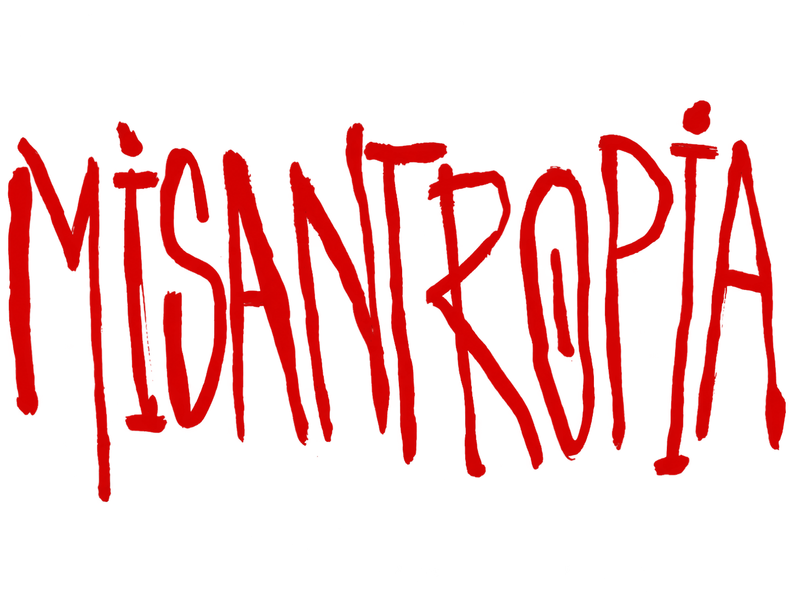

N.
NADINE
A esperança de todos. Uma jovem que tenta sustentar um mundo inteiro enquanto luta contra as próprias dúvidas.
UMA TRAGÉDIA EM TRÊS ATOS

O FIM NÃO COMEÇA
QUANDO TUDO ACABA.
COMEÇA QUANDO
NINGUÉM MAIS CONFIA.
O MUNDO ESTÁ EM RUÍNAS
Em um mundo marcado pela dor, pela escassez e pela guerra, uma jovem se torna o símbolo de salvação de uma humanidade à beira do fim.
Mas fé também pode virar controle. E, quando todos procuram alguém para culpar, a verdade talvez seja a primeira vítima.
Em quem confiar quando nada parece ter salvação?
O ÓDIO
VEM DE
DENTRO.
Não é só sobre o fim do mundo.
É sobre aquilo que fazemos uns com os outros antes dele.
Salvadores, sobreviventes e aqueles que aprenderam a transformar o medo em poder. Ninguém está completamente a salvo de si mesmo.
A esperança de todos. Uma jovem que tenta sustentar um mundo inteiro enquanto luta contra as próprias dúvidas.
Banqueiro, manipulador e sedento por influência. Para ele, ser amado talvez seja apenas outra forma de dominar.
Conselheira de Nadine. Tenta enxergar a pessoa por trás do símbolo, mesmo quando o mundo deixa de fazê-lo.
Um presidente que ocupa o poder, mas talvez nunca tenha sido dono das próprias decisões.
Uma presença silenciosa. Está sempre por perto — e parece conhecer uma verdade que ninguém quer ouvir.
OS PERSONAGENS SÃO MAIS DO QUE PARECEM. OU MENOS.
Conheça o elenco e a equipe de Misantropia.
Nadine
Morte
Américo
Maia
Vergueiro
Jorge Junior
ESPAÇO RESERVADO PARA AS FOTOS DO ELENCO
UM JOGO DE ATENÇÃO
Ela vai aparecer. Você terá poucos segundos para encontrá-la. Não confie no que seus olhos deixam de ver.
AGUARDANDO O INÍCIO...
20 SEGUNDOS. NENHUMA SEGUNDA CHANCE. VOCÊ FOI AVISADO.
Algumas histórias terminam quando as cortinas se fecham.
Outras continuam depois que você vai embora.